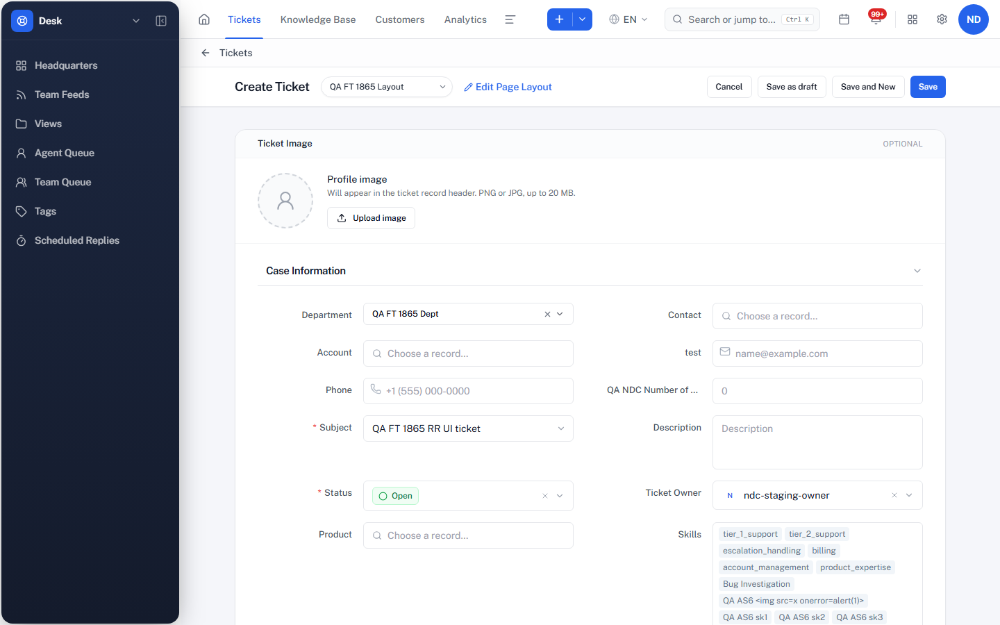
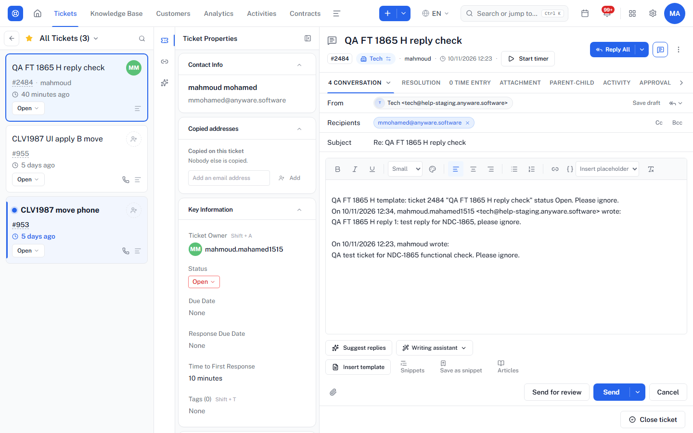
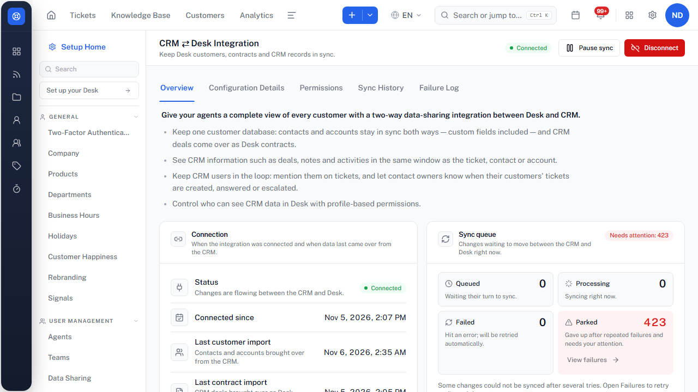
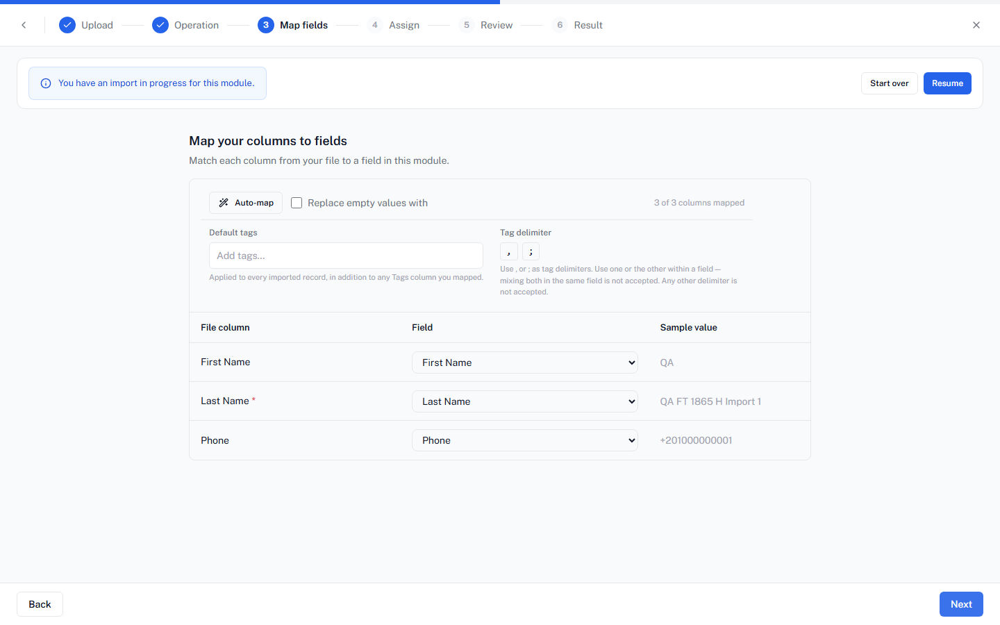

NDC-1865 Desk Features: functional check
Results by feature
| # | Feature | Verdict | What was done and seen | Detailed tickets |
|---|---|---|---|---|
| 1 | Modules and Fields | Working | Own layout for a throwaway department with a text and a picklist field; ticket saved with values and read back; a wrong picklist value refused (422); the New Ticket form shows both fields. | NDC-2174 |
| 2 | Activity Life Cycle | Working | Task, call and event created on a ticket; task edited and completed; event deleted; all show on the ticket Activity tab and in Activities. | NDC-2635, NDC-2830 |
| 3 | Direct Assignment Rules | Working | Rule "department + subject contains X → Test User 1": matching ticket assigned, other ticket left alone. The tenant-wide Direct rules switch is OFF on NDC-Staging (turned on ~20 s for the test, then off again). | NDC-1978, NDC-2275 |
| 4 | Workflows | Working | On create: priority set to High and a tag added; a second rule ran a saved Field Update action; both runs logged. | — |
| 5 | SLAs (with escalation) | Working | Policy 2 min response / 3 min resolution: due times set on create; at breach the escalation raised priority to Urgent and reassigned to Test User 1. | NDC-2754 |
| 6 | Round Robin Assignment | Working | Sequential round robin over 2 agents: 4 tickets went TU1, QA1, TU1, QA1 (only when the ticket has no owner — see finding A). | NDC-2275, NDC-2752 |
| 7 | Blueprints | Working | 2-state blueprint: new ticket entered it, the transition ran, status became Closed and the ticket left the blueprint. | NDC-2754 |
| 8 | Notification rules | Working, with a limit | Rules are a fixed list of on/off switches per department (37 in Tech), so no custom rule can be created. An enabled rule fired (public comment → contact email, "Reply queued / Reply sent" in history); the bell lists notifications. | — |
| 10 | Data Administration (excl. Backup) | Partly checked | Recycle Bin delete, restore and purge work; the Audit Log records the restore. Import wizard reached Assign but the import was not run (finding F). Export and Bulk Actions Log not checked. | — |
| 11 | Collaboration | Working | Private ticket comment with @mention saves a real mention; Team Feeds post in HR with mention list, then deleted. | — |
| 12 | Ticketing Reply | Working | Draft auto-saves (~5 s); reply sent and shows "Sent"; scheduled reply created 12 h ahead and discarded; ticket closed. | NDC-2636, NDC-2831 |
| 13 | Email Templates | Working | Folder + template created; inserted into a reply, the placeholders (ticket number, subject, status) filled in and the reply was sent. The template subject was not used (finding C). | — |
| 14 | CRM ⇄ Desk Integration | Working | A new Desk contact appeared in CRM within seconds ("synced"). Edit sync not checked. 423 parked syncs explained below. | NDC-2392 |
Findings for your decision
A. Assignment rules skip a ticket that keeps its default owner Likely bug · Medium
In the New Ticket form, Ticket Owner is pre-filled with the creator and the save sends no owner field; the API without an owner does the same. The ticket then already has an owner, so Direct Assignment and Round Robin never run on it. The rules ran only when the owner was sent as empty. On 7 Nov (case D-14) a ticket with no owner was still routed, so this changed since then. Effect: an agent who creates a ticket and leaves the default keeps it; rules are bypassed.

B. Reply All left "To" empty after our first reply To recheck
On the second reply, To was empty (or the contact sat in Cc with To empty) and the contact had to be added by hand. The ticket was created by API; a ticket that arrived by email may behave differently. Needs one recheck on an email ticket before filing.
C. Email template subject not applied Possible bug · Low
Inserting a template into a reply fills the body placeholders, but the reply keeps "Re: …" instead of the template subject. In Zoho Desk a reply keeps the thread subject too, so this may be by design — compare before filing.

D. Deleting a Desk contact does not delete the CRM copy To confirm intended behaviour
After the synced Desk contact was deleted, the CRM contact stayed. Many of the 423 parked syncs are this same situation (record in the other side's Recycle Bin). Needs a product decision on delete sync.
E. "Parked" count 423 vs 226 in the failures list Possible bug · Low
The integration page shows 423 parked changes but the failures list returns 226 records. Top reasons: linked Desk record in the Recycle Bin (64 contact deletes, 64 contact imports, 29 accounts); CRM record deleted (29 contacts, 6 accounts); contract missing required values (10 deal imports); empty Last Name in CRM (8); email already linked to another contact (9); Desk contract deleted (3). Almost all come from test records deleted on one side.

F. An unfinished import blocks the next import Possible bug · Low
The first import attempt left an "import in progress" session open; the retry showed "You have an import in progress for this module" with no error. "Start over" cleared it; nothing was imported. Same family as the CRM leftover session from NDC-2628.

G. New department saved as private when created as public To recheck
Lane G created the throwaway department with visibility "public"; it was saved as "private". Not investigated.
Not checked, and why
- Data import run: blocked by the leftover import session (finding F); no records imported.
- Export: the export page emails the person exporting (mahmoud.mahamed1515), which is not the approved test mailbox.
- Bulk Actions Log: skipped to keep within the time limit.
- CRM ⇄ Desk edit sync: only the create sync was checked.
Emails sent and settings touched
- Up to 4 emails to mmohamed@anyware.software from Tech <tech@help-staging.anyware.software>, subject "Re: QA FT 1865 H reply check": first reply, template reply, the public-comment notification, and possibly the ticket-closed mail (that rule is on).
- Creating the Tech ticket fired the enabled "department ticket created" rule, which emails Tech's agents. That went outside the approved address and could not be avoided without changing a shared rule.
- Tenant Direct rules switch: turned on for ~20 s, back off and confirmed off. No other shared setting changed.
Cleanup
- Lane G: 16 tickets, 2 assignment rules, 2 workflow rules, 1 saved action, 1 tag, 1 SLA policy, 1 blueprint, 1 layout, 2 fields and the department deleted, purged, all 404, bin clear.
- Lane H: task, call, event, ticket, contact, template, folder deleted and purged (404); feed post deleted; scheduled reply discarded; CRM copy of the contact deleted and purged (404); import sessions cleared; nothing imported.
- Session files deleted; no tokens in the run folder.
- Staging was unstable during the run (two 503s, one failed page load after a deploy, one sign-out, one network change); none affected the verdicts.
Draft Plane comment for NDC-1865 (not posted)
Functional check, 10 Nov 2026 (tenant NDC-Staging)
Each feature was used end to end once on throwaway data (deleted afterwards). Automation Studio was left out. Result: 11 working, 1 working with a limit, 1 partly checked.
- Modules and Fields: Working. Own layout for a throwaway department with a text and a picklist field; ticket saved with values and read back; a wrong picklist value refused (422); the New Ticket form shows both fields.
- Activity Life Cycle: Working. Task, call and event created on a ticket; task edited and completed; event deleted; all show on the ticket Activity tab and in Activities.
- Direct Assignment Rules: Working. Rule "department + subject contains X → Test User 1": matching ticket assigned, other ticket left alone. The tenant-wide Direct rules switch is OFF on NDC-Staging (turned on ~20 s for the test, then off again).
- Workflows: Working. On create: priority set to High and a tag added; a second rule ran a saved Field Update action; both runs logged.
- SLAs (with escalation): Working. Policy 2 min response / 3 min resolution: due times set on create; at breach the escalation raised priority to Urgent and reassigned to Test User 1.
- Round Robin Assignment: Working. Sequential round robin over 2 agents: 4 tickets went TU1, QA1, TU1, QA1 (only when the ticket has no owner — see finding A).
- Blueprints: Working. 2-state blueprint: new ticket entered it, the transition ran, status became Closed and the ticket left the blueprint.
- Notification rules: Working, with a limit. Rules are a fixed list of on/off switches per department (37 in Tech), so no custom rule can be created. An enabled rule fired (public comment → contact email, "Reply queued / Reply sent" in history); the bell lists notifications.
- Data Administration (excl. Backup): Partly checked. Recycle Bin delete, restore and purge work; the Audit Log records the restore. Import wizard reached Assign but the import was not run (finding F). Export and Bulk Actions Log not checked.
- Collaboration: Working. Private ticket comment with @mention saves a real mention; Team Feeds post in HR with mention list, then deleted.
- Ticketing Reply: Working. Draft auto-saves (~5 s); reply sent and shows "Sent"; scheduled reply created 12 h ahead and discarded; ticket closed.
- Email Templates: Working. Folder + template created; inserted into a reply, the placeholders (ticket number, subject, status) filled in and the reply was sent. The template subject was not used (finding C).
- CRM ⇄ Desk Integration: Working. A new Desk contact appeared in CRM within seconds ("synced"). Edit sync not checked. 423 parked syncs explained below.
Findings to follow up: assignment rules skip tickets that keep the default owner; Reply All "To" empty after a reply (to recheck); template subject not applied; deleting a Desk contact leaves the CRM copy; parked sync count 423 vs 226 listed; an unfinished import blocks the next one; a new department saved as private.